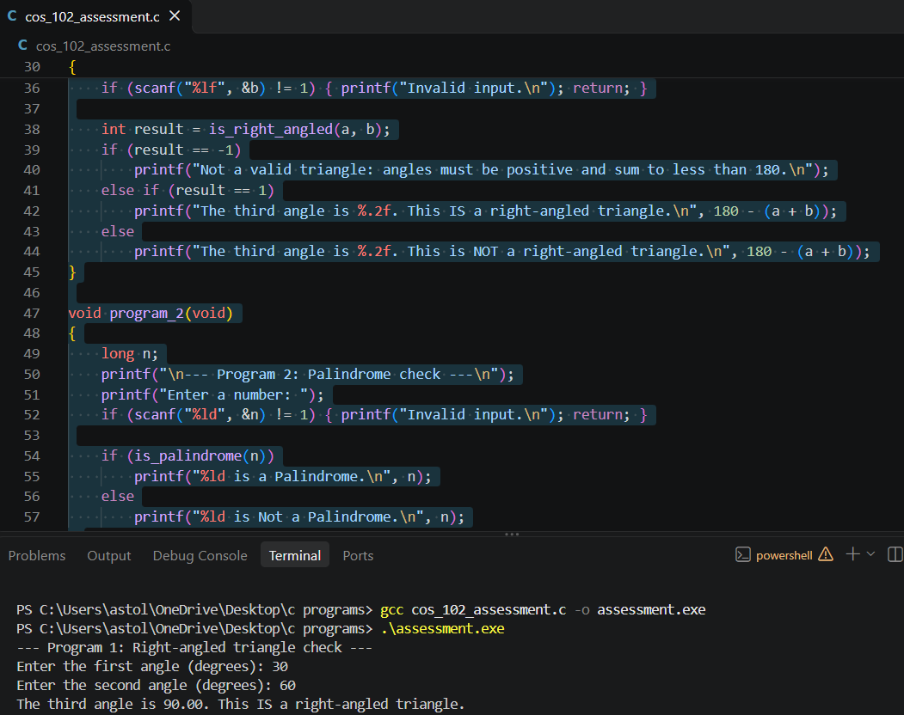
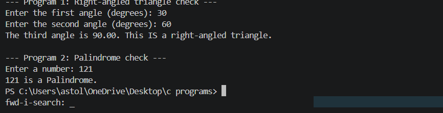

MY WORK
Projects & Experiments
A collection of my programming exercises and academic work.

Right-Angled Triangle Checker
A program that calculates the third angle of a triangle and determines whether it is right-angled. Demonstrates functions, conditional statements and mathematical logic.
Technology: C

Palindrome Checker
A program that determines whether a number reads the same forwards and backwards. Demonstrates logical thinking and programming functions.
Technology: C
Personal Academic Portfolio
A multi-page academic website developed to showcase my educational background, technical skills, projects and academic activities.
Technologies: HTML, CSS and JavaScript
Currently in progress